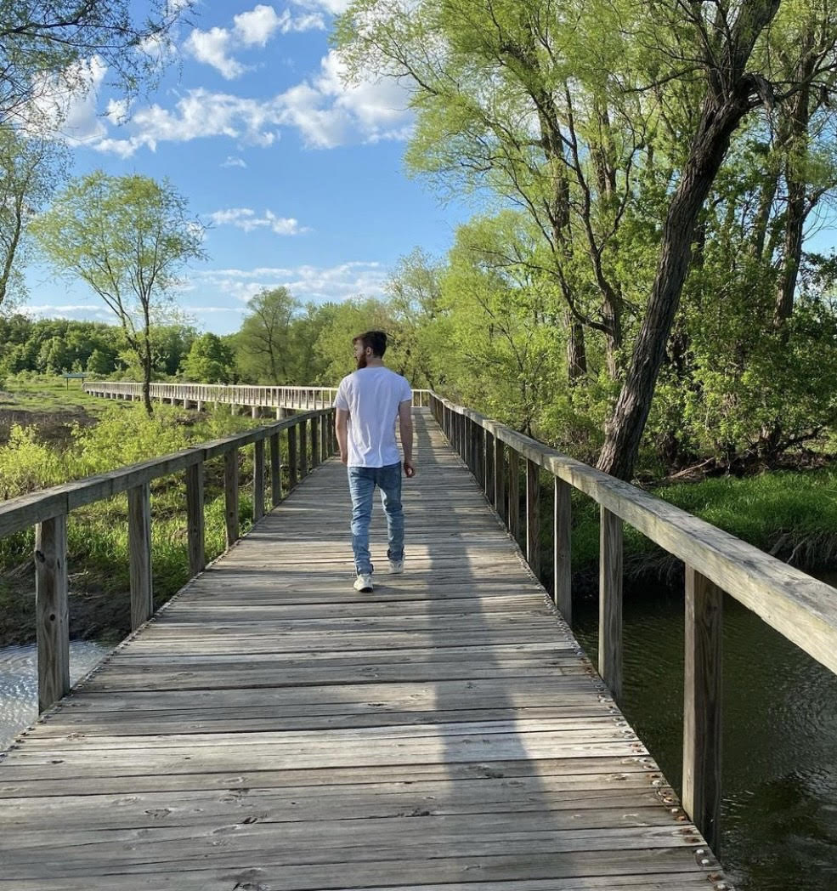
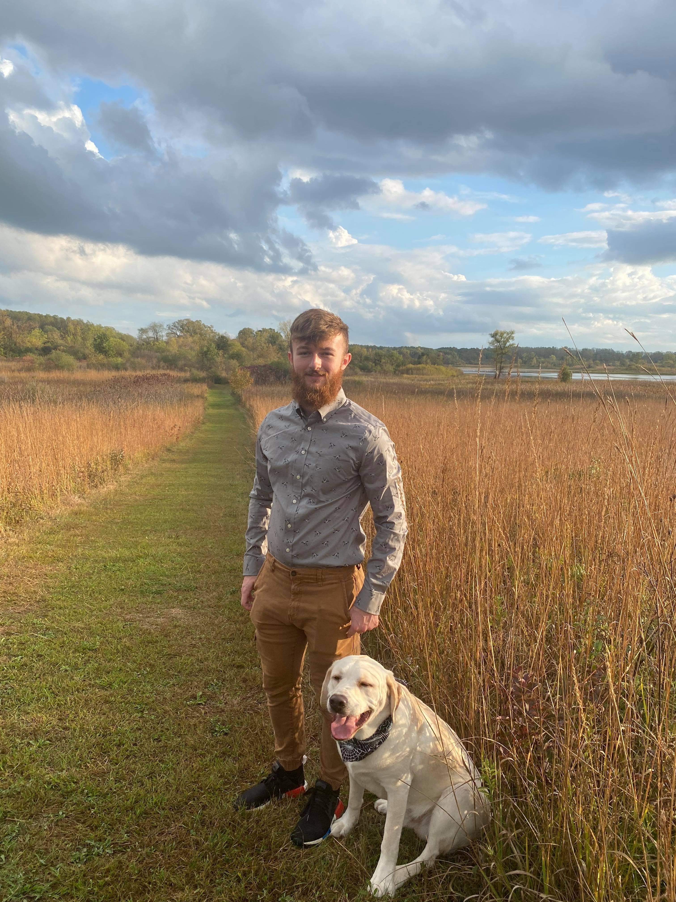

My name is Joshua Laviolette, and I'm a software
developer and recent graduate from the University
of Wisconsin Parkside with a bachelor's in
Computer Science.
I have experience in front end development, back
end development, and agile scrum techniques. Most
of my expertise is in Java and other object-
oriented languages.

Some hobbies of mine include weightlifting,
kickboxing, hiking with my dog, and just about
anything else to get outside.